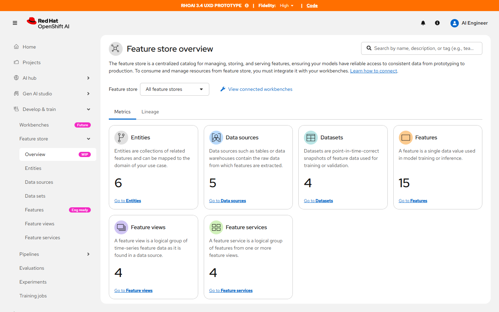
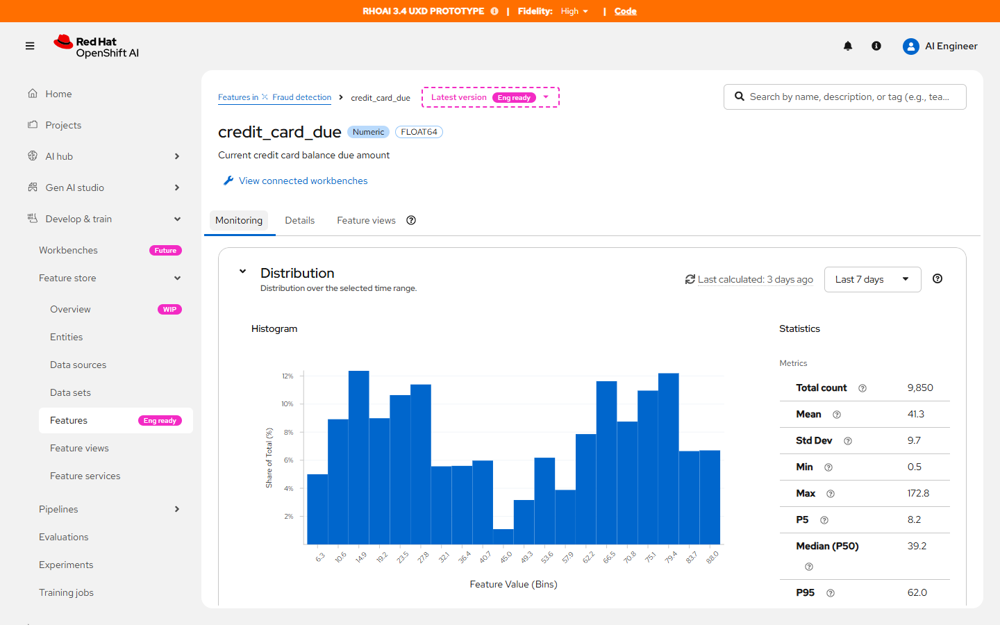
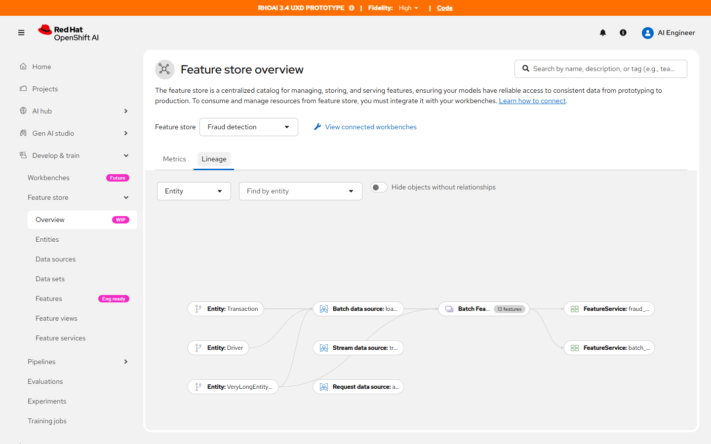

02 · OpenShift AI 体验原型
Feature Store
特征库是模型从实验做到上线时共用的目录。人要先判断一个特征还能不能用；当真值可疑时，还要能从服务追回数据源。
用户三类专家共用一个库
场景找特征，并追上游
守住的边界过期分布不能看起来像现在
状态体验原型
用户画像
三个人进的是同一个特征库。列表负责「还能不能用」，血缘负责「从哪来、被谁用」。
两条流程
血缘按一个特征库来画。选「全部特征库」时图是空的，因为把无关流水线画在一起，数据工程师无法判断断在哪一段。
打开一个特征，先看到分布和新鲜度。值可疑时，换到血缘，从服务追回实体和数据源。
列表做成两种视图。可观测视图用来判断能不能用：空值比例、多久没更新、分布形状。元数据视图用来查类型和标签。默认是前者。详情第一屏是 Monitoring，并单独标出 Last calculated，避免把几天前的分布当成现在。
血缘图回答数据工程师的问题：这个特征视图吃的是哪个数据源，服务又用了哪些视图。图按 Entity、Data source、Feature view、Feature service 连接。界面使用 PatternFly，顶栏标明这是 RHOAI 3.4 的体验稿，数据是欺诈检测等示例库。
界面结果

Metrics 回答库里有什么：实体、数据源、数据集、特征、视图和服务各有多少，并能直接进去。
 特征列表默认是 Observability View。扫描时就能看到空值、新鲜度和分布，不必先点进每一行。
特征列表默认是 Observability View。扫描时就能看到空值、新鲜度和分布，不必先点进每一行。

credit_card_due 打开就是分布和统计量。时间范围可以改，计算时间单独写明。

选定 Fraud detection 之后，Lineage 画出这条库自己的关系：实体 Transaction、Driver 连到批式、流式和请求数据源，再汇入带有 13 个特征的特征视图，最后接到特征服务。数据工程师排障时沿这张图往回找，而不是在四张列表之间来回对名字。
还停在 All feature stores 时，Lineage 是空的，提示先选一个特征库。选中 Fraud detection 之后，这张图才画出来。
点中 Entity: Transaction。相连的数据源、特征视图和特征服务被标出来，其余关系变淡。
发给公司以外的人之前，先确认界面和示例数据可以公开。需要打码时，保留「总览 → 可观测列表 → 监控详情」和「选定特征库 → 血缘」这两条。
打开 Feature Store，并看 Fraud detection 的血缘 →